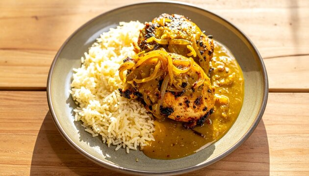
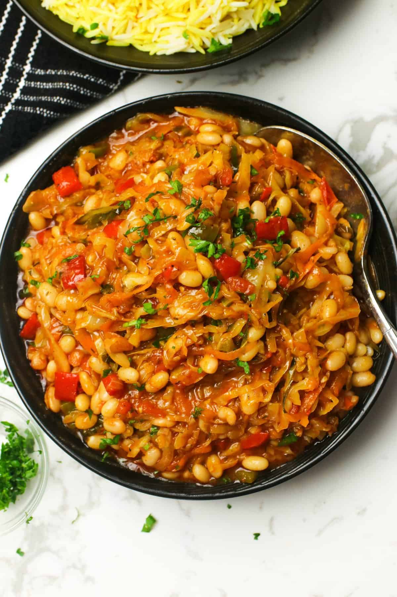

Ghanaian Jollof Rice
Rice cooked in a rich tomato sauce with onions, peppers, and spices.
Country: Ghana
Cooking Time: 60 minutes
Difficulty: Medium
View RecipeExplore traditional dishes from different African countries. Each recipe includes ingredients, cooking instructions, and a little background about the dish.
Rice cooked in a rich tomato sauce with onions, peppers, and spices.
Country: Ghana
Cooking Time: 60 minutes
Difficulty: Medium
View Recipe
A popular Ghanaian meal made by cooking rice and beans together.
Country: Ghana
Cooking Time: 90 minutes
Difficulty: Medium
View Recipe
A thick Nigerian soup prepared with ground melon seeds and vegetables.
Country: Nigeria
Cooking Time: 55 minutes
Difficulty: Medium
View Recipe
A soft flatbread commonly served with stews and other meals.
Region: East Africa
Cooking Time: 45 minutes
Difficulty: Easy
View Recipe
A Senegalese chicken dish prepared with onions, lemon, and mustard.
Country: Senegal
Cooking Time: 75 minutes
Difficulty: Medium
View Recipe
A spicy South African vegetable relish often served as a side dish.
Country: South Africa
Cooking Time: 35 minutes
Difficulty: Easy
View Recipe